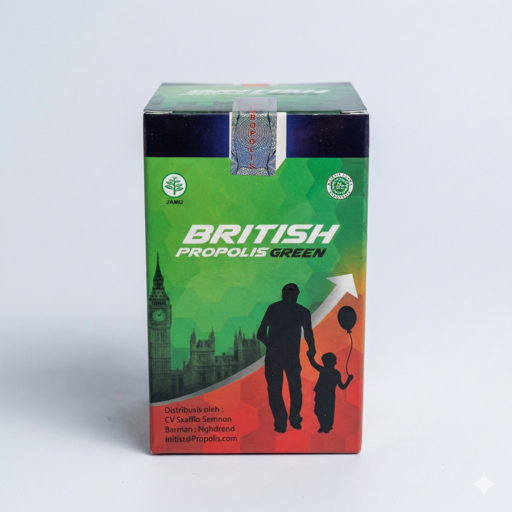

Target: Pertumbuhan Anak
British Propolis Green
"Ingin menjaga nafsu makan dan daya tahan anak usia sekolah?"
Membantu memelihara imunitas dan mendukung tumbuh kembang anak secara alami. Nutrisinya dirancang untuk mudah diserap oleh tubuh anak agar mereka tetap ceria dan tidak mudah sakit.
Edukasi HargaRp 250.000
Konsultasi WA